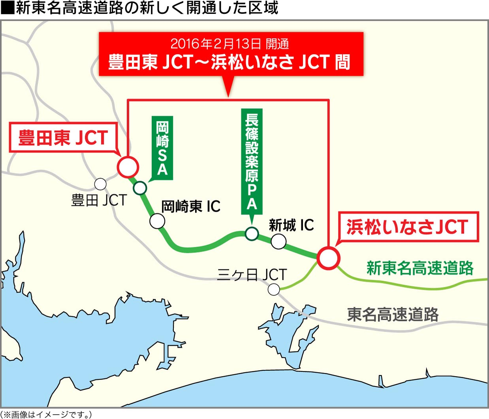

2016年地図データ秋版を収録
- 2016年7月1日までの地図データを採用しています。（一部データを除きます。）
- 住所登録データ 約3,913万件、施設（名称）検索データ 約640万件を収録。多くのデータにアクセスできます。さらに、２画面表示の際の分岐イラストも大幅に増加し、より走行しやすくなりました。
2016年7月1日までに新規開通・再開した道路収録（一例）
| 北海道 |
道東自動車道 |
白糠IC〜阿寒IC |
| 北海道 |
釧路外環状道路 |
釧路西IC～釧路東IC |
| 宮城県 |
三陸自動車道 |
多賀城IC |
| 静岡県 |
新東名高速道路 |
浜松いなさIC〜豊田東IC |
| 滋賀県 |
名神高速道路 |
栗東湖南IC |
| 岡山県 |
湯郷勝央道路 |
勝央IC～勝央JCT |
| 山口県 |
中国自動車道 |
小郡JCT |
| 高知県 |
高知南国道路 |
なんこく南IC～高知龍馬空港IC |
| 熊本県 |
南九州西回り自動車道 |
芦北IC～津奈木IC |
| 鹿児島県 |
南九州西回り自動車道 |
野田IC～阿久根北IC |
2016年7月1日までに新規開通したスマートIC（一例）
| 静岡県 |
東名高速道路 |
大井川焼津藤枝スマートIC
愛鷹スマートIC |
| 新潟県 |
日本海東北自動車道 |
新潟東スマートIC |
| 宮城県 |
常磐自動車道 |
鳥の海スマートIC |
